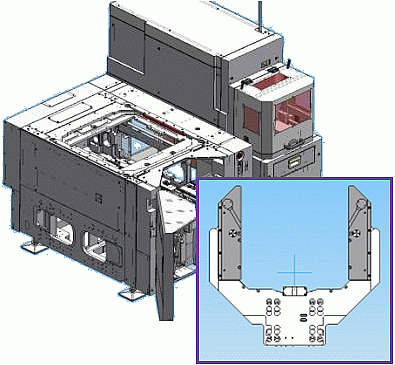

Direct-Probe products from vendors
Except for the hard docking pins and the WSRF Bridge Beam (E8016BBWS), prober vendors provide the following products aligned with the Advantest Direct-Probe™ specifications.
Direct-Probe™ components
The drawing below shows a prober head plate equipped with the hard docking pins, the bridge beam, the Direct-Probe™ prober ring insert and a probe card.

Direct-Probe™ card changer

Direct-Probe™ products from vendors
- Probe card, see
- Prober head plate
- Direct-Probe™ prober ring insert
- Bridge beam1):
- The design must be consistent for each prober:
One design for analog and digital and one for RF applications
- No contact from the bridge beam to test head allowed
- Required planarity: 1 mil = 0.0254 mm
- For the RF concept, see Direct-Probe RF bridge beam specifications
- The design must be consistent for each prober:
- Direct-Probe™ card changer
The hard docking pins are provided by Advantest (Product number E7016DP).
Functional changes
- Introduced in SmarTest 6.5.4
1) The WSRF Bridge Beam (E8016BBWS) is provided by Advantest.